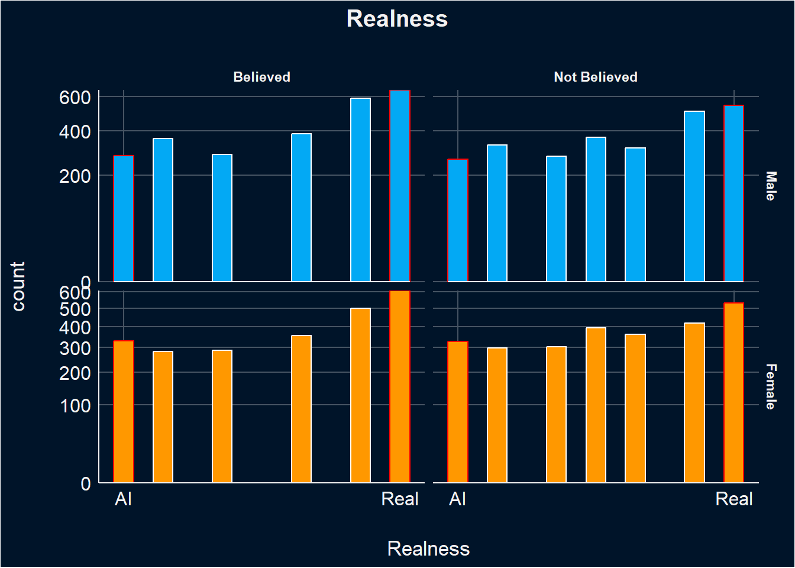
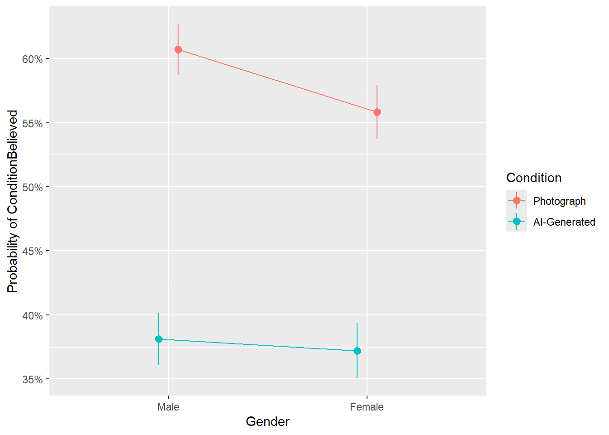
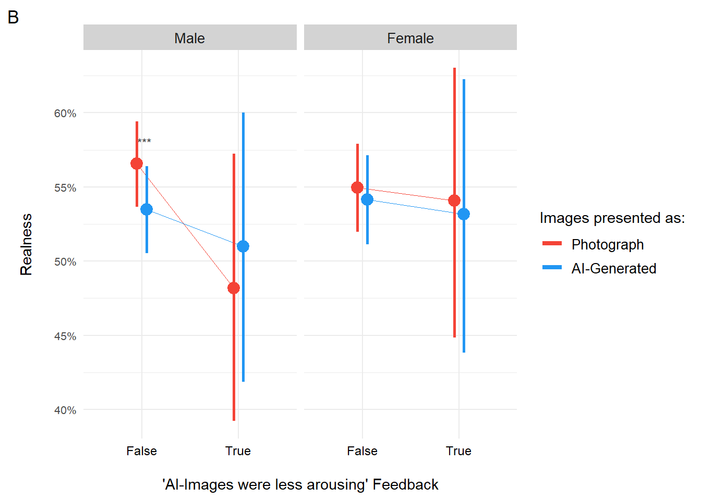
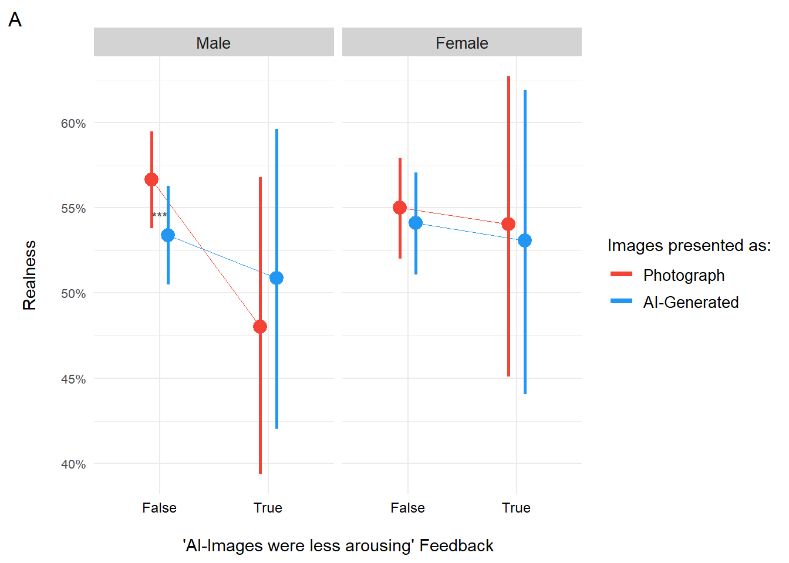

Code
library(tidyverse)
library(easystats)
library(patchwork)
library(ggside)
library(glmmTMB)
options(mc.cores = parallel::detectCores(),
brms.backend = "cmdstanr",
width = 300)library(tidyverse)
library(easystats)
library(patchwork)
library(ggside)
library(glmmTMB)
options(mc.cores = parallel::detectCores(),
brms.backend = "cmdstanr",
width = 300)dfsub <- read.csv("../data/data_participants.csv")
df <- read.csv("../data/data.csv") |>
right_join(
select(dfsub, Participant, Mobile, starts_with(c("Feedback_", "BAIT_")), COPS_Frequency, SexualActivity,-Feedback_Text),
by = "Participant"
) |>
datawizard::rescale(select= c("Arousal", "Enticing", "Valence"), range=c(0, 6), to=c(0,1)) |>
datawizard::rescale(select= c("Realness"), range=c(-3,3), to=c(0,1)) |>
mutate(Condition = case_when(
Condition == "Fiction" ~ "AI-Generated",
Condition == "Reality" ~ "Photograph"
)) |>
mutate(Condition = fct_relevel(Condition, "Photograph", "AI-Generated"),
SexualOrientation = fct_relevel(SexualOrientation,"Heterosexual", "Homosexual", "Bisexual"),
Gender = fct_relevel(Gender, "Male", "Female"),
PornFrequency = as.numeric(as.factor(COPS_Frequency)),
SexualActivity_num = as.numeric(as.factor(SexualActivity)),
ConditionBelief = case_when(
Condition == "Photograph" & Realness > 0.5 ~ "True",
Condition == "AI-Generated" & Realness < 0.5 ~ "True",
.default = "False"),
RealnessBelief = ifelse(Realness > 0.5, 1, 0)) |>
rename(AllRealConfidence = "Feedback_AllRealConfidence",
AllFakeConfidence = "Feedback_AllFakeConfidence",
Enjoyment = "Feedback_Enjoyment"
)|>
mutate(across(starts_with("Feedback_"), as.factor))
results_table <- function(model, effects="fixed", filter=NULL) {
if("marginaleffects" %in% class(model)) {
model |>
parameters::parameters() |>
as.data.frame() |>
select(-Parameter, -SE, -S, z=Statistic, -Predicted) |>
insight::format_table() |>
parameters::display()
} else {
display(parameters::parameters(model, effects=effects, keep=filter))
}
}Note: These calculations are based on the validation of the BAIT scale
df$BAIT_Videos <- (df$BAIT_VideosRealistic + (1 - df$BAIT_VideosIssues)) / 2
df$BAIT_Visual = (df$BAIT_ImagesRealistic + (1 - df$BAIT_ImagesIssues) + df$BAIT_ImitatingReality + df$BAIT_EnvironmentReal) / 4
df$BAIT_Text = (df$BAIT_TextRealistic + (1 - df$BAIT_TextIssues)) / 2
df$BAIT_Negative <- (df$BAIT_Worry + df$BAIT_Dangerous)/2
df$BAIT_Positive <- (df$BAIT_Exciting + df$BAIT_Benefit)/2The Realness variable captures a distribution of responses ranging from extreme values (0 and 1) to more ambivalent ratings in between. Given the bounded an ordered beta regression model was employed, as recommended for such data structures (Kubinec, 2022).
Notably, participants’ confidence in their judgments varied depending on whether they believed the image label (e.g., “AI-generated” or “Photograph”). When the label was believed, participants tended to give more extreme realness ratings, suggesting greater confidence in their evaluations. In contrast, non-belief in the label was associated with a higher frequency of intermediate responses, indicating more uncertainty or ambivalence in perceived realness.
df |>
mutate(ConditionBelief = as.factor(ConditionBelief)) |>
mutate(ConditionBelief = case_when(
ConditionBelief == "False" ~ "Not Believed",
ConditionBelief == "True" ~ "Believed",)) |>
mutate(Realness_Extreme = ifelse(Realness %in% c(0, 1), "Extreme", "Not extreme")) |>
ggplot(aes(x=Realness, fill = Gender)) +
geom_histogram(aes(color=Realness_Extreme), position = "identity", bins=15) +
scale_x_continuous(
breaks = c(0, 1),
labels = c("AI","Real")) +
facet_grid(Gender ~ ConditionBelief, scales="free_y") +
scale_color_manual(values=c("red", "white"), guide="none") +
scale_fill_manual(values=c("Female"="#FF9800", "Male"="#03A9F4"), guide="none") +
scale_y_sqrt(expand = c(0, 0)) +
facet_wrap(Gender~SexualOrientation) +
labs(title = "Realness") +
theme_abyss() +
theme(plot.title = element_text(hjust = 0.5, face="bold"))
df <- df|>
filter(SexualOrientation == "Heterosexual")Here, we are examining the effect of various physical characteristics of the images to evaluate whether they influence the perceived realness of the images. Neither Entropy, Complexity, Contrast, nor Luminance significantly influence the perceived realness of the images, nor the likelihood of realness being above 0.5 (“RealnessBelief”), as indicated by the lack of significant effects.
make_model <- function(f, family=glmmTMB::ordbeta()) {
m <- glmmTMB::glmmTMB(as.formula(f),
data=df,
family=family,
control = glmmTMB::glmmTMBControl(parallel = 8))
print(results_table(m))
m
}
m <- make_model("Realness ~ Entropy + (1|Participant) + (1|Stimulus)", family=glmmTMB::ordbeta())
Table: Fixed Effects
|Parameter | Coefficient | SE | 95% CI | z | p |
|:-----------|:-----------:|:----:|:-------------:|:-----:|:-----:|
|(Intercept) | 0.37 | 0.35 | (-0.31, 1.05) | 1.06 | 0.290 |
|Entropy | -0.03 | 0.05 | (-0.12, 0.07) | -0.53 | 0.596 |m <- make_model("RealnessBelief ~ Entropy + (1|Participant) + (1|Stimulus)", family="binomial")
Table: Fixed Effects
|Parameter | Log-Odds | SE | 95% CI | z | p |
|:-----------|:--------:|:----:|:-------------:|:-----:|:-----:|
|(Intercept) | 0.61 | 0.73 | (-0.83, 2.05) | 0.83 | 0.405 |
|Entropy | -0.06 | 0.10 | (-0.26, 0.14) | -0.57 | 0.566 |m <- make_model("Realness ~ Complexity + (1|Participant) + (1|Stimulus)", family=glmmTMB::ordbeta())
Table: Fixed Effects
|Parameter | Coefficient | 95% CI |
|:-----------|:-----------:|:------:|
|(Intercept) | 0.13 | |
|Complexity | 2.74e-07 | |m <- make_model("RealnessBelief ~ Complexity + (1|Participant) + (1|Stimulus)", family="binomial")
Table: Fixed Effects
|Parameter | Log-Odds | SE | 95% CI | z | p |
|:-----------|:--------:|:--------:|:---------------------:|:----:|:-----:|
|(Intercept) | 0.06 | 0.25 | (-0.43, 0.54) | 0.23 | 0.820 |
|Complexity | 6.30e-07 | 1.06e-06 | (-1.44e-06, 2.70e-06) | 0.60 | 0.552 |m <- make_model("Realness ~ Contrast + (1|Participant) + (1|Stimulus)", family=glmmTMB::ordbeta())
Table: Fixed Effects
|Parameter | Coefficient | SE | 95% CI | z | p |
|:-----------|:-----------:|:--------:|:---------------------:|:-----:|:-----:|
|(Intercept) | 0.19 | 0.15 | (-0.11, 0.49) | 1.25 | 0.211 |
|Contrast | -1.17e-04 | 2.51e-03 | (-5.03e-03, 4.80e-03) | -0.05 | 0.963 |m <- make_model("RealnessBelief ~ Contrast + (1|Participant) + (1|Stimulus)", family="binomial")
Table: Fixed Effects
|Parameter | Log-Odds | SE | 95% CI | z | p |
|:-----------|:---------:|:--------:|:-----------------:|:-----:|:-----:|
|(Intercept) | 0.22 | 0.32 | (-0.41, 0.84) | 0.67 | 0.501 |
|Contrast | -3.75e-04 | 5.29e-03 | (-0.01, 9.99e-03) | -0.07 | 0.943 |m <- make_model("Realness ~ Luminance + (1|Participant) + (1|Stimulus)", family=glmmTMB::ordbeta())
Table: Fixed Effects
|Parameter | Coefficient | SE | 95% CI | z | p |
|:-----------|:-----------:|:--------:|:---------------------:|:-----:|:-----:|
|(Intercept) | 0.20 | 0.10 | (3.88e-03, 0.40) | 2.00 | 0.046 |
|Luminance | -4.06e-04 | 2.01e-03 | (-4.35e-03, 3.54e-03) | -0.20 | 0.840 |m <- make_model("RealnessBelief ~ Luminance + (1|Participant) + (1|Stimulus)", family="binomial")
Table: Fixed Effects
|Parameter | Log-Odds | SE | 95% CI | z | p |
|:-----------|:---------:|:--------:|:---------------------:|:-----:|:-----:|
|(Intercept) | 0.24 | 0.21 | (-0.17, 0.65) | 1.14 | 0.254 |
|Luminance | -1.01e-03 | 4.25e-03 | (-9.34e-03, 7.33e-03) | -0.24 | 0.813 |This model examines the influence Gender and Condition on ratings of realness, incorporating random intercepts for participants and items.
For males the realness ratings were lower for images labelled AI-Generated compared to real photographs. For females they also rated images labelled as AI-Generated as less Real, altough this effect was not significant.
m <- make_model("Realness ~ Gender / Condition +
(1|Participant) + (1|Stimulus)",
family=glmmTMB::ordbeta())
Table: Fixed Effects
|Parameter | Coefficient | SE | 95% CI | z | p |
|:---------------------------------------|:-----------:|:----:|:--------------:|:-----:|:------:|
|(Intercept) | 0.24 | 0.06 | (0.13, 0.36) | 4.10 | < .001 |
|Gender (Female) | -0.04 | 0.07 | (-0.18, 0.10) | -0.62 | 0.534 |
|Gender (Male) × ConditionAI-Generated | -0.11 | 0.03 | (-0.17, -0.05) | -3.61 | < .001 |
|Gender (Female) × ConditionAI-Generated | -0.03 | 0.03 | (-0.09, 0.03) | -1.05 | 0.294 |predbeta <- estimate_relation(m, length=20)
m <- make_model("RealnessBelief ~ Gender / Condition +
(1|Participant) + (1|Stimulus)",
family="binomial")
Table: Fixed Effects
|Parameter | Log-Odds | SE | 95% CI | z | p |
|:---------------------------------------|:--------:|:----:|:------------------:|:-----:|:------:|
|(Intercept) | 0.39 | 0.11 | (0.18, 0.59) | 3.66 | < .001 |
|Gender (Female) | -0.24 | 0.12 | (-0.48, -7.57e-03) | -2.02 | 0.043 |
|Gender (Male) × ConditionAI-Generated | -0.25 | 0.07 | (-0.38, -0.12) | -3.86 | < .001 |
|Gender (Female) × ConditionAI-Generated | -0.05 | 0.07 | (-0.18, 0.08) | -0.72 | 0.473 |predbin <- estimate_relation(m, length=20)
predbeta |>
ggplot(aes(x=Condition, y=Predicted)) +
geom_pointrange(aes(ymin=CI_low, ymax=CI_high, color=Condition), position = position_dodge(width=0.2)) +
scale_color_manual(values=c("red", "blue"), guide="none") +
facet_grid(~Gender)
Here we look at whether the findings above are moderated by AI-Generated, Porn frequency and sexual activity or feedback. Note that the focus solely on heterosexaul individuals (N = 170)
This model looks at whether realness ratings are moderated by attitudes towards AI. Looking at the results, the influence of Gender and Condition on Realness scores was not moderated by attidues towards AI.
test_moderator <- function(df, moderator="BAIT_Visual") {
f <- paste0("Realness ~ Gender / (Condition * ", moderator, ") + (1| Participant) + (1|Stimulus)")
r <- glmmTMB::glmmTMB(as.formula(f),
data=df,
family=glmmTMB::ordbeta(),
control = glmmTMB::glmmTMBControl(parallel = 8)) |>
parameters::parameters() |>
as.data.frame() |>
select(-df_error, -Effects, -Group, -Component, -SE)
r$Moderator <- moderator
insight::format_table(filter(r, str_detect(Parameter, moderator)))
}
moderator <- data.frame()
for(m in c("BAIT_Visual", "BAIT_Text", "BAIT_ExpertAI",
"BAIT_Positive", "BAIT_Negative")) {
moderator <- rbind(moderator, test_moderator(df, m))
}
display(filter(moderator, p < .05))NULLThis model evaluates how ratings of realness, predicted by Gender and Condition, are moderated by participants’ report of how often they engaged in sexual activity and how often they view pornography. Looking at porn frequency and sexual activity, the influence of Gender and Condition on Realness scores was not moderated by these variables.
moderator <- data.frame()
for(m in c("PornFrequency", "SexualActivity_num")) {
moderator <- rbind(moderator, test_moderator(df, m))
}
display(filter(moderator, p < .05))NULLThis model evaluates how ratings of realness, predicted by sex, condition, and relevance, are moderated by participants’ feedback.
For males, the feedback that AI-generated images were less arousing significantly moderated realness ratings for images labeled as AI-generated, with higher realness ratings for those images when participants thought they were less arousing.
For males, the belief that all images were real significantly increased realness ratings for all images, regardless of their actual content.
For females, the belief that no faces were attractive significantly increased realness ratings for the images, suggesting that lower attractiveness perceptions made the images seem more real.
moderator <- data.frame()
for(m in c("Feedback_DiffObvious", "Feedback_DiffNone",
"Feedback_AIMoreArousing", "Feedback_AILessArousing",
"Feedback_NoFacesAttractive", "Feedback_SomeFacesAttractive",
"Feedback_LabelsIncorrect", "Feedback_LabelsReversed",
"Feedback_AllReal", "Feedback_AllFake",
"AllRealConfidence","AllFakeConfidence" ,
"Enjoyment")) {
moderator <- rbind(moderator, test_moderator(df, m))
}
display(filter(moderator, p < .05))| Parameter | Coefficient | 95% CI | z | p | Moderator |
|---|---|---|---|---|---|
| Gender [Male] × ConditionAI-Generated × Feedback AILessArousingTrue | 0.24 | [ 0.01, 0.46] | 2.04 | 0.041 | Feedback_AILessArousing |
| Gender [Female] × Feedback NoFacesAttractiveTrue | 0.53 | [ 0.17, 0.89] | 2.86 | 0.004 | Feedback_NoFacesAttractive |
| Gender [Female] × Feedback LabelsIncorrectTrue | 0.22 | [ 0.00, 0.43] | 1.99 | 0.047 | Feedback_LabelsIncorrect |
| Gender [Male] × Feedback AllRealTrue | 0.29 | [ 0.09, 0.48] | 2.90 | 0.004 | Feedback_AllReal |
m2 <- glmmTMB::glmmTMB(Realness ~ Gender /
(Feedback_AILessArousing / Condition) +
(1|Participant) + (1|Stimulus),
data=df,
family=glmmTMB::ordbeta(),
control = glmmTMB::glmmTMBControl(parallel = 8))
summary(m2) Family: ordbeta ( logit )
Formula: Realness ~ Gender/(Feedback_AILessArousing/Condition) + (1 |
Participant) + (1 | Stimulus)
Data: df
AIC BIC logLik deviance df.resid
13403.6 13495.7 -6688.8 13377.6 8787
Random effects:
Conditional model:
Groups Name Variance Std.Dev.
Participant (Intercept) 0.16468 0.4058
Stimulus (Intercept) 0.07395 0.2719
Number of obs: 8800, groups: Participant, 176; Stimulus, 100
Dispersion parameter for ordbeta family (): 3.75
Conditional model:
Estimate
(Intercept) 0.26406
GenderFemale -0.06566
GenderMale:Feedback_AILessArousingTrue -0.33725
GenderFemale:Feedback_AILessArousingTrue -0.03501
GenderMale:Feedback_AILessArousingFalse:ConditionAI-Generated -0.12420
GenderFemale:Feedback_AILessArousingFalse:ConditionAI-Generated -0.03217
GenderMale:Feedback_AILessArousingTrue:ConditionAI-Generated 0.11222
GenderFemale:Feedback_AILessArousingTrue:ConditionAI-Generated -0.03657
Std. Error
(Intercept) 0.05993
GenderFemale 0.07371
GenderMale:Feedback_AILessArousingTrue 0.18946
GenderFemale:Feedback_AILessArousingTrue 0.19252
GenderMale:Feedback_AILessArousingFalse:ConditionAI-Generated 0.03086
GenderFemale:Feedback_AILessArousingFalse:ConditionAI-Generated 0.03195
GenderMale:Feedback_AILessArousingTrue:ConditionAI-Generated 0.11146
GenderFemale:Feedback_AILessArousingTrue:ConditionAI-Generated 0.12048
z value
(Intercept) 4.406
GenderFemale -0.891
GenderMale:Feedback_AILessArousingTrue -1.780
GenderFemale:Feedback_AILessArousingTrue -0.182
GenderMale:Feedback_AILessArousingFalse:ConditionAI-Generated -4.025
GenderFemale:Feedback_AILessArousingFalse:ConditionAI-Generated -1.007
GenderMale:Feedback_AILessArousingTrue:ConditionAI-Generated 1.007
GenderFemale:Feedback_AILessArousingTrue:ConditionAI-Generated -0.304
Pr(>|z|)
(Intercept) 1.05e-05 ***
GenderFemale 0.3730
GenderMale:Feedback_AILessArousingTrue 0.0751 .
GenderFemale:Feedback_AILessArousingTrue 0.8557
GenderMale:Feedback_AILessArousingFalse:ConditionAI-Generated 5.69e-05 ***
GenderFemale:Feedback_AILessArousingFalse:ConditionAI-Generated 0.3140
GenderMale:Feedback_AILessArousingTrue:ConditionAI-Generated 0.3141
GenderFemale:Feedback_AILessArousingTrue:ConditionAI-Generated 0.7615
---
Signif. codes: 0 '***' 0.001 '**' 0.01 '*' 0.05 '.' 0.1 ' ' 1stars2 <- data.frame(Gender = as.factor(c("Male")),
feedback = as.factor("Feedback_AILessArousing"),
label=c("***"),
x=c(1.03),
y=c(0.58))
# stars3 <- data.frame(Sex = as.factor(c("Male", "Male", "Female")),
# label=c("***", "***", "***"),
# x=c(1.1, 1.8, 1.15),
# y=c(0.71, 0.80, 0.615))
pred1 <- estimate_relation(m2)
p1 <- pred1 |>
ggplot(aes(x=Feedback_AILessArousing, y=Predicted)) +
geom_line(aes(color=Condition, group=Condition), linewidth=.3, position = position_dodge(width=0.2), key_glyph = "path") +
geom_pointrange(aes(ymin=CI_low, ymax=CI_high, color=Condition), position = position_dodge(width=0.2), size=0.8, linewidth=1, key_glyph = "blank") +
# geom_text(data=stars2, aes(x=x, y=y, label=label, color=Condition), hjust=0.5, key_glyph = "blank", size=3) +
geom_text(data=stars2, aes(x=x, y=y, label=label), hjust=0.5, color="#424242", size=3) +
guides(color=guide_legend(override.aes = list(linewidth = 1.5))) +
facet_grid(~Gender) +
scale_y_continuous(labels=scales::percent) +
scale_color_manual(values=c("AI-Generated"="#2196F3", "Photograph"="#F44336")) +
theme_minimal() +
theme(axis.text.y = element_text(size = 8),
strip.placement = "outside",
strip.background.x = element_rect(fill=c("lightgrey"), color=NA),
strip.text.x = element_text(size = 10),
strip.text.y = element_text(size = 10),
axis.text.x = element_text(size=9, color="black"),
legend.text = element_text(size = 10)) +
labs(y="Realness\n", fill="Images presented as:", color="Images presented as:",
x = "\n'AI-Images were less arousing' Feedback",
tag = "B")
p1
m2 <- glmmTMB::glmmTMB(Realness ~ Gender /
(Feedback_NoFacesAttractive / Condition) +
(1 | Participant) + (1|Stimulus),
data=df,
family=glmmTMB::ordbeta(),
control = glmmTMB::glmmTMBControl(parallel = 8))
summary(m2) Family: ordbeta ( logit )
Formula:
Realness ~ Gender/(Feedback_NoFacesAttractive/Condition) + (1 |
Participant) + (1 | Stimulus)
Data: df
AIC BIC logLik deviance df.resid
13395.9 13487.9 -6684.9 13369.9 8787
Random effects:
Conditional model:
Groups Name Variance Std.Dev.
Participant (Intercept) 0.15486 0.3935
Stimulus (Intercept) 0.07426 0.2725
Number of obs: 8800, groups: Participant, 176; Stimulus, 100
Dispersion parameter for ordbeta family (): 3.75
Conditional model:
Estimate
(Intercept) 0.23179
GenderFemale -0.07740
GenderMale:Feedback_NoFacesAttractiveTrue 0.19631
GenderFemale:Feedback_NoFacesAttractiveTrue 0.53057
GenderMale:Feedback_NoFacesAttractiveFalse:ConditionAI-Generated -0.10901
GenderFemale:Feedback_NoFacesAttractiveFalse:ConditionAI-Generated -0.04099
GenderMale:Feedback_NoFacesAttractiveTrue:ConditionAI-Generated -0.06342
GenderFemale:Feedback_NoFacesAttractiveTrue:ConditionAI-Generated 0.09093
Std. Error
(Intercept) 0.05839
GenderFemale 0.07160
GenderMale:Feedback_NoFacesAttractiveTrue 0.23315
GenderFemale:Feedback_NoFacesAttractiveTrue 0.18546
GenderMale:Feedback_NoFacesAttractiveFalse:ConditionAI-Generated 0.03028
GenderFemale:Feedback_NoFacesAttractiveFalse:ConditionAI-Generated 0.03188
GenderMale:Feedback_NoFacesAttractiveTrue:ConditionAI-Generated 0.15877
GenderFemale:Feedback_NoFacesAttractiveTrue:ConditionAI-Generated 0.12424
z value
(Intercept) 3.969
GenderFemale -1.081
GenderMale:Feedback_NoFacesAttractiveTrue 0.842
GenderFemale:Feedback_NoFacesAttractiveTrue 2.861
GenderMale:Feedback_NoFacesAttractiveFalse:ConditionAI-Generated -3.599
GenderFemale:Feedback_NoFacesAttractiveFalse:ConditionAI-Generated -1.285
GenderMale:Feedback_NoFacesAttractiveTrue:ConditionAI-Generated -0.399
GenderFemale:Feedback_NoFacesAttractiveTrue:ConditionAI-Generated 0.732
Pr(>|z|)
(Intercept) 7.2e-05 ***
GenderFemale 0.279733
GenderMale:Feedback_NoFacesAttractiveTrue 0.399796
GenderFemale:Feedback_NoFacesAttractiveTrue 0.004225 **
GenderMale:Feedback_NoFacesAttractiveFalse:ConditionAI-Generated 0.000319 ***
GenderFemale:Feedback_NoFacesAttractiveFalse:ConditionAI-Generated 0.198621
GenderMale:Feedback_NoFacesAttractiveTrue:ConditionAI-Generated 0.689552
GenderFemale:Feedback_NoFacesAttractiveTrue:ConditionAI-Generated 0.464204
---
Signif. codes: 0 '***' 0.001 '**' 0.01 '*' 0.05 '.' 0.1 ' ' 1# stars2 <- data.frame(
# Gender = as.factor("Male"),
# Condition = "AI-Generated",
# label = "***",
# x = 1.5,
# y = 0.5)
pred2 <- estimate_relation(m2)
p2 <- pred2 |>
ggplot(aes(x=Feedback_NoFacesAttractive, y=Predicted)) +
geom_line(aes(color=Condition, group=Condition), linewidth=.3, position = position_dodge(width=0.2), key_glyph = "path") +
geom_pointrange(aes(ymin=CI_low, ymax=CI_high, color=Condition), position = position_dodge(width=0.2), size=0.8, linewidth=1, key_glyph = "blank") +
# geom_text(data=stars2, aes(x=x, y=y, label=label, color=Condition), hjust=0.5, key_glyph = "blank", size=3) +
# geom_text(data=stars2, aes(x=x, y=y, label=label), hjust=0.5, color="#424242", size=3) +
guides(color=guide_legend(override.aes = list(linewidth = 1.5))) +
facet_grid(~Gender) +
scale_y_continuous(labels=scales::percent) +
scale_color_manual(values=c("AI-Generated"="#2196F3", "Photograph"="#F44336")) +
theme_minimal() +
theme(axis.text.y = element_text(size = 8),
strip.placement = "outside",
strip.background.x = element_rect(fill=c("lightgrey"), color=NA),
strip.text.x = element_text(size = 10),
strip.text.y = element_text(size = 10),
axis.text.x = element_text(size=9, color="black"),
legend.text = element_text(size = 10)) +
labs(y="Realness\n", fill="Images presented as:", color="Images presented as:",
x = "\n'AI-Faces were less attractive' Feedback",
tag = "B")
p2